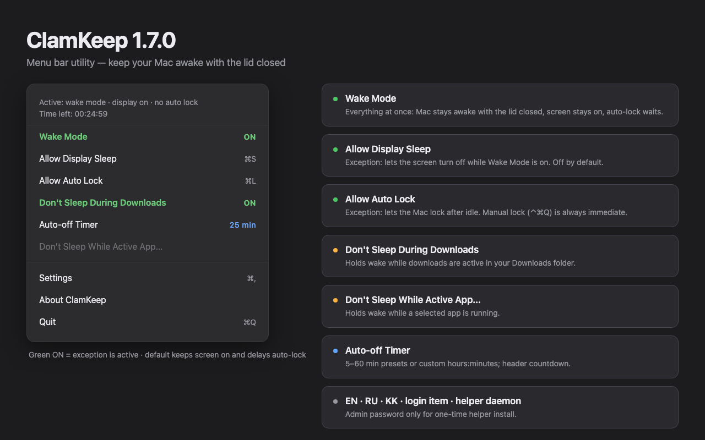

Menu bar utility for macOS — keep your Mac awake with the lid closed. Screen stays on and auto-lock waits by default.

Everything at once: keeps your Mac awake with the lid closed, keeps the screen on, and delays auto-lock.
Exception: lets the screen turn off while Wake Mode is on. Off by default.
Exception: lets the Mac lock after idle while Wake Mode is on. Off by default. Manual lock (⌃⌘Q) is always immediate.
Standing policy: holds wake for download processes and recent activity in your Downloads folder.
Keeps wake on while a selected app runs. When it quits, only that reason is cleared.
5–60 minute presets or custom hours:minutes. The menu header shows a live countdown.
manual / downloads / watched app — one source ending does not cancel the others.
EN / RU / KK, launch at login, five icon styles, universal binary, passwordless helper.
| State | Display | Auto lock | Lid closed |
|---|---|---|---|
| Wake Mode (default) | Screen stays on | Delayed | Screen off (hardware), system awake |
| + Allow Display Sleep | Display may sleep | Delayed | Screen off (hardware), system awake |
| + Allow Auto Lock | Screen stays on (unless also allowed) | Normal after idle; manual lock immediate | Screen off (hardware), system awake |
| + Auto-off Timer | Header countdown; session ends at 00:00:00 | ||
ClamKeep-1.7.0.dmg from ReleasesRequires macOS 13+. Universal binary (Apple Silicon + Intel).
~/Downloads activity detectioncaffeinate -d for display sleep prevention